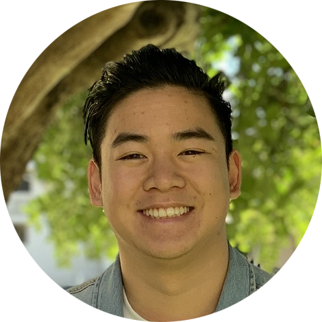
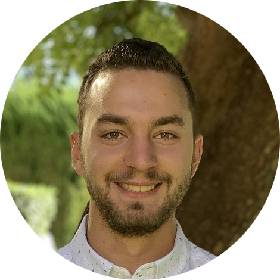

Tony Do
CEO
Tony is a third-year student at UC San Diego studying a double major in Communication and Public Law,
along with a minor in Business Marketing and Operations. He is a full-time student and Chancellor’s Associate Scholar.

EJ Ozyazgan
CTO
EJ is a third-year student at UC San Diego studying Cognitive Science specializing in machine learning,
along with a minor in Business Finance. He has been a developer for the past 6 years and loves coding.